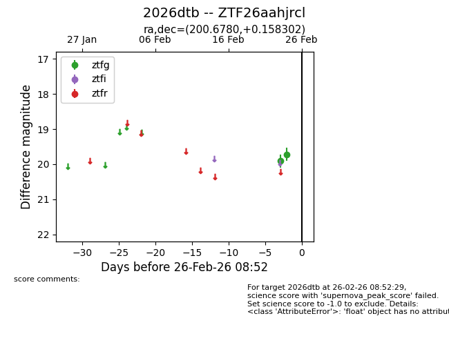
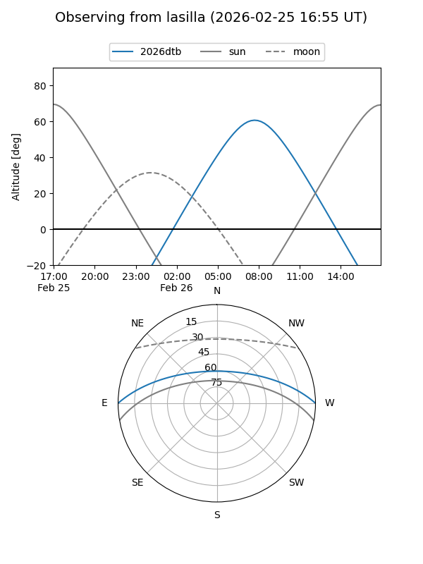
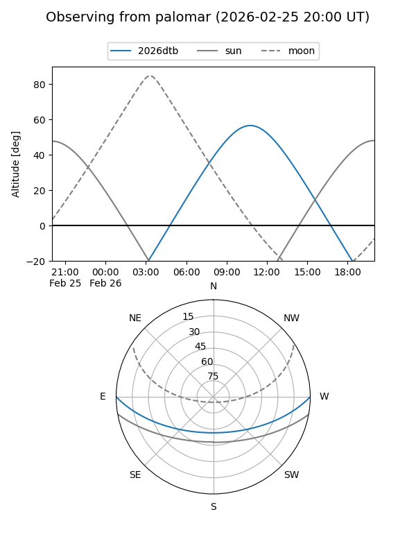

2026dtb
Target 2026dtb at 2026-02-26 08:53
Aliases and brokers:
FINK: link
Lasair: link
ALeRCE: link
TNS: link
YSE: link
alt names
ZTF26aahjrcl (ztf,fink_ztf)
2026dtb (tns,yse)
Coordinates:
equatorial (ra, dec) = 200.6780,+0.15830
equatorial (HMS+DMS) = 13:22:42.72,+00:09:29.89
galactic (l, b) = (319.7773,+62.00288)
Flags:
Photometry:
last ztfg=19.72
2 ztfg detections
Lightcurve

Visibility


Additional plots